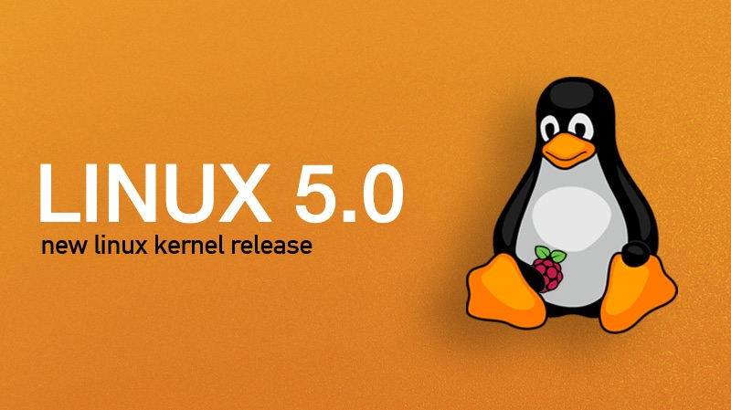

本文教你如何从源代码编译 linux 内核，并将其装在 u 盘中，从而变成 “便携式 linux 系统”。

准备 linux 环境，可以在 VMware 虚拟机里运行。
我这里用的是 Archlinux 系统，不同系统大同小异。
编译内核
安装环境
首先安装 base-devel 软件组，这个组包含了 make 和 gcc 等需要的软件包。
sudo pacman -S base-devel下载内核并解压
从这里下载linux内核。
我们以版本5.0.11为例子。
首先新建个文件夹叫 kernelbuild 然后下载内核压缩包到该文件夹
mkdir ~/kernelbuild
cd ~/kernelbuild
wget https://cdn.kernel.org/pub/linux/kernel/v5.x/linux-5.0.11.tar.xz然后我们解压内核压缩包：
tar -xvJf linux-5.0.11.tar.xz为确保内核树绝对干净，进入内核目录并执行 make mrproper 命令：
cd linux-5.0.11
make clean && make mrproper配置内核并编译
内核配置，会进入配置界面：
make x86_64_defconfig
make menuconfig
确保选中以下选项（按 y 选中，按 n 取消选择；按上下左右方向键移动选择的光标位置；回车确认）：
General Setup –> [*] Initial RAM filesystem and RAM disk (initramfs/initrd) support
Device Drivers –> Block Devices –> [*] RAM block device support
Device Drivers -> Input device support -> [*] Keyboard -> 全部选择为[*]
Device Drivers -> HID support -> 全部选择为[*]
Device Drivers -> HID support -> USB HID support -> 全部选择为[*]
然后编译（需要等上十几分钟吧，再此期间你可以继续进行下一步busybox的准备）：
make -j4 bzImage最后生成的 arch/x86_64/boot/bzImage 才是我们想要的内核文件（这个文件才8M多而已）
准备 BusyBox 工具
到官网下载 BusyBox，以1.30.1版本为例。
下载并解压：
cd ～
wget https://busybox.net/downloads/busybox-1.30.1.tar.bz2
tar -jxvf busybox-1.30.1.tar.bz2
cd busybox-1.30.1/然后进行配置：
make defconfig
make menuconfig确保选中：
- BusyBox Setting->Build Options->[*]Build Busybox as a static binary (no shared libs)
然后编译（编译很快）：
make最后安装：
make install执行 ls ，会发现多了一个 _install 目录，我们要用它来构建 linux 的根目录。
准备 linux 所需文件
首先在用户目录下新建一个文件夹 romfs ，然后把 _install 目录中的内容全部复制到 romfs 中。
cd ~
mkdir romfs
cp -r busybox-1.30.1/_install/* romfs/然后创建我们 linux 目录下的文件夹：
cd romfs/
mkdir proc mnt var tmp dev sys etc然后创建软链接：
ln -s bin/sh init接着我们创建设备：
cd dev/
sudo mknod console c 5 1
sudo mknod null c 1 3
sudo mknod tty c 5 0
sudo mknod tty1 c 4 1
sudo mknod tty2 c 4 2
sudo mknod tty3 c 4 3
sudo mknod tty4 c 4 4然后制作压缩镜像（可能还要执行sudo pacman -S cpio）：
cd ~/romfs/
find . | cpio -H newc -o > ../romfs.img
cd ../
gzip romfs.img -f在 u 盘建立文件系统和 EFI 引导
这部分教程使用 GPT+EFI 作为启动引导。
如果你执意使用 GPT+BIOS 作为引导，则请按照下面的步骤来操作（应该可行）：
- 创建两个分区：FAT32（例如64MB）和EXT4（例如256MB）。并设置FAT32的启动标识为
bios_grub类型。- 创建文件夹/mnt/usb，将EXT4分区挂载到 /mnt/usb，再创建文件夹 /mnt/usb/boot
- 然后安装grub：
grub-install --target=i386-pc --debug --removable --boot-directory=/mnt/usb/boot /dev/sdd- 复制 bzImage 和 romfs.img.gz 过去到 /mnt/usb/boot
- 创建 grub.cfg，并写入一些内容（与下面教程的相应部分类似），酌情修改。
- 重启电脑，选择从Legacy启动，保存修改，将u盘的优先级调到最高。再次启动即可。
u 盘分区
插入u盘，使用GParted进行分区。
在右上角选中你的u盘（例如我的是/dev/sdd），删除所有分区，然后点菜单栏的勾勾按钮。
然后新建两个分区，一个是FAT32，一个是EXT4，大小分别为64M和256M足矣。然后打勾勾确定。
更改刚刚建立的FAT32分区的标识为
boot,esp。
安装 Grub 到 u 盘
首先挂载刚刚建立的 FAT32 分区到 /mnt/usb 目录下：
cd /mnt
sudo mkdir efi_partition
sudo mkdir boot_partition
sudo mount /dev/sdd1 ./efi_partition
sudo mount /dev/sdd2 ./boot_partition然后将 grub 安装到 u 盘：
sudo grub-install --target=x86_64-efi --boot-directory=/mnt/boot_partition --efi-directory=/mnt/efi_partition --bootloader-id=karbo --removable --debug安装成功后应该会在最后的输出看到：安装完成。没有报告错误。类似的字样。
然后将编译好的文件复制过去：
sudo cp ~/kernelbuild/linux-5.0.11/arch/x86_64/boot/bzImage /mnt/boot_partition/
sudo cp ~/romfs.img.gz /mnt/boot_partition最后创建个文本文件：
sudo micro /mnt/boot_partition/grub/grub.cfg内容为：
menuentry "karbo-linux" {
set root='hd0,gpt2'
linux /bzImage root=/dev/ram
initrd /romfs.img.gz
}最后重启电脑，狂按F2，调整为UEFI启动，并把你u盘启动的优先级调到最顶上来，保存更改，再次启动即可。
应该会看到类似如下的界面：
如果在UEFI里没有找到你的u盘，那么可能是你插入了多个usb存储设备，尝试将其他usb存储设备拔掉，并重试。